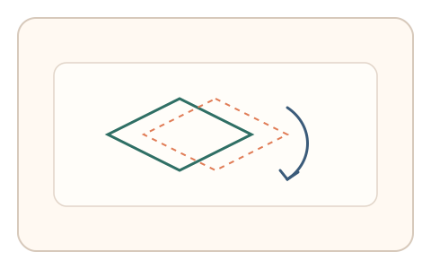
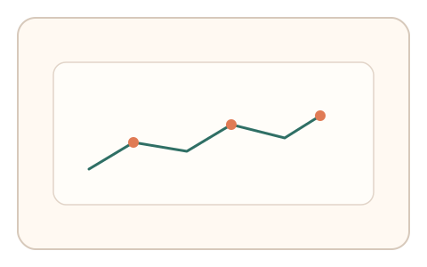
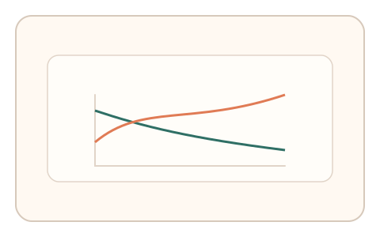

#133
E：双底座耦合 × 双信号 × 多阶段/双任务（认知偏置 + 生理/时域）
已扩展
双稳态翻转‑速度衰减
追踪双稳态刺激并标记翻转时刻，关联翻转潜伏期与追踪速度衰减进行判定。
概念原文
用户持续追踪目标并标记知觉翻转时刻，系统关联翻转潜伏期与速度衰减曲线做异常检测。
结合双稳态动态特征与生理漂移。
研究背景
双稳态知觉会在时间上自发翻转，潜伏期分布具有稳定区间。持续追踪任务通常出现速度衰减与微漂移，将两者耦合可形成难以伪造的时域特征。
核心机制
- 呈现可翻转的双稳态刺激并要求持续追踪。
- 用户在知觉翻转时点击标记。
- 记录翻转潜伏期序列与追踪速度曲线。
- 计算翻转‑速度的耦合强度并与基线比对。
用户流程
- 步骤 1：用户开始追踪双稳态目标。
- 步骤 2：每次翻转时点击标记。
- 步骤 3：系统分析潜伏期与速度衰减。
判定信号
翻转潜伏期分布
双稳态翻转呈现稳定的时间结构。
追踪速度衰减曲线
人类追踪存在自然衰减与微漂移。
判定逻辑
潜伏期分布与速度衰减需落在人类区间且具有合理耦合；过度规则或无衰减判异常。
对抗面
- 脚本按固定间隔触发翻转标记
- 重放真实用户的追踪轨迹
防御与缓解
- 随机化刺激形态与翻转诱因
- 加入轻微抖动与噪声干扰
- 多段任务取平均提升鲁棒性
可达性与风险
提供更慢速度与低运动强度版本，允许键盘触发翻转标记。
- 运动刺激可能引起不适
- 注意力负担过高导致误判
可视化状态

状态 1：双稳态刺激
可翻转形态提示持续追踪。

状态 2：翻转标记
用户在翻转时点击并留下标记。

状态 3：耦合判定
比较潜伏期与速度衰减曲线。
参考资料
Bistable perception
说明双稳态知觉的翻转特性。
Smooth pursuit
说明连续追踪运动目标的特性。